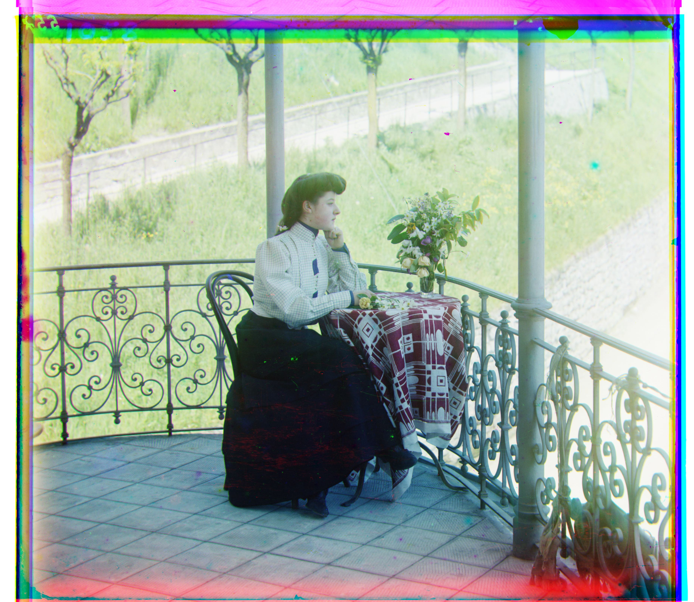

Overview
Each input plate stacks B-G-R vertically. I split channels, then translate-align G/R to B by maximizing ZNCC on Sobel gradient magnitude with interior-only comparison (ratio-based border crop). For large .tif plates, a coarse-to-fine image pyramid yields accurate and fast alignment.


Methodology
Single-scale alignment (baseline, small JPGs)
- Split:
split_bgr_plate()slices the vertical plate into B, G, R. - Feature: optionally convert to Sobel gradient magnitude (
feature_grad()/grad_mag()). - Interior-only metric:
crop_interior()supports pixel or ratio borders. - Search: exhaustive translations within
[-R, R](default ±15 px). - Score: ZNCC (
zncc()) on the cropped interior; pick the max. - Compose: stack aligned
[R, G, B]to RGB and save.
Implementation notes:
crop_interior() accepts int (pixels) or float (ratio);
ZNCC is “higher is better”.
Coarse-to-fine pyramid (large TIFs)
- Downsample: build pyramids from coarse → fine with factor
scale = 0.5. - Coarsest init: run local search at coarsest level using Sobel + ZNCC.
- Propagate: rescale offsets by ×2 at each finer level.
- Refine: refine with a small-radius local search.
- Ratio crop: use ratio borders (e.g.,
0.08).
Key routines:
build_pyramid(), align_local_search(), align_pyramid().
Results (with Offsets)
Colorized outputs with corresponding offsets (G,R relative to B).

G:(+2,+5), R:(+3,+12)
single · NCC

G:(+2,-3), R:(+2,+3)
single · NCC

G:(+2,+3), R:(+3,+6)
single · NCC

G:(+4,+25), R:(-4,+58)
pyramid · edges+ZNCC
G:(+23,+49), R:(+40,+107)
pyramid · edges+ZNCC

G:(+17,+60), R:(+14,+124)
pyramid · edges+ZNCC
G:(+17,+42), R:(+23,+90)
pyramid · edges+ZNCC

italil.tif
G:(+22,+38), R:(+36,+77)
pyramid · edges+ZNCC
G:(+22,+38), R:(+36,+77)
pyramid · edges+ZNCC

G:(-2,-3), R:(-8,+76)
pyramid · edges+ZNCC

G:(-17,+41), R:(-29,+92)
pyramid · edges+ZNCC

G:(+10,+80), R:(+13,+177)
pyramid · edges+ZNCC

G:(+29,+78), R:(+37,+176)
pyramid · edges+ZNCC
G:(-7,+49), R:(-24,+96)
pyramid · edges+ZNCC

G:(+12,+54), R:(+9,+111)
pyramid · edges+ZNCC
LoC Extras
Additional images from the Library of Congress collection. Only colorized outputs are shown. Offsets are (G,R) relative to B, format (dx, dy), right/down positive.
G:(+34,+56), R:(+60,+125)
pyramid · edges+ZNCC
G:(+4,+63), R:(-1,+132)
pyramid · edges+ZNCC
G:(-7,+15), R:(-17,+83)
pyramid · edges+ZNCC
G:(+15,+41), R:(+25,+91)
pyramid · edges+ZNCC
Tip: outputs are saved to
./out/ as testX_color.jpg.
Offsets filled from console logs. Input plates are intentionally omitted.
Discussion
Failures, lessons, runtime
- Challenging cases (e.g., strong cross-channel intensity change like emir); edges helped.
- Runtime: < 1 min per image with pyramid + vectorization.
- Border cropping and interior-only metrics improved stability.